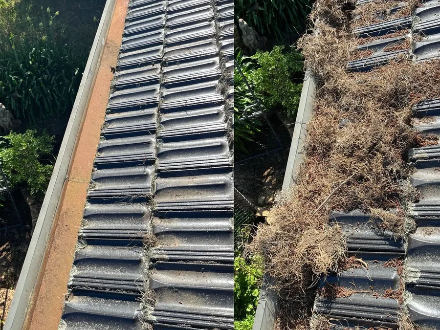
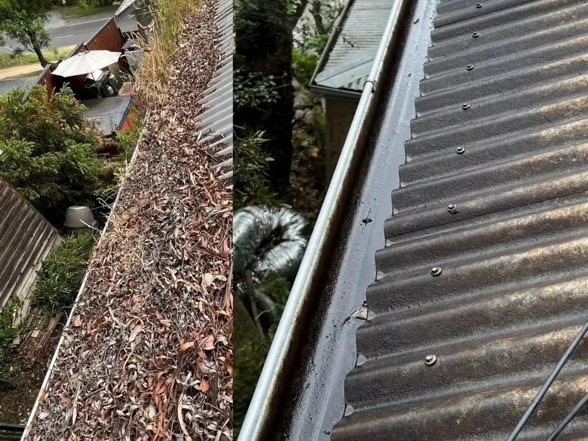
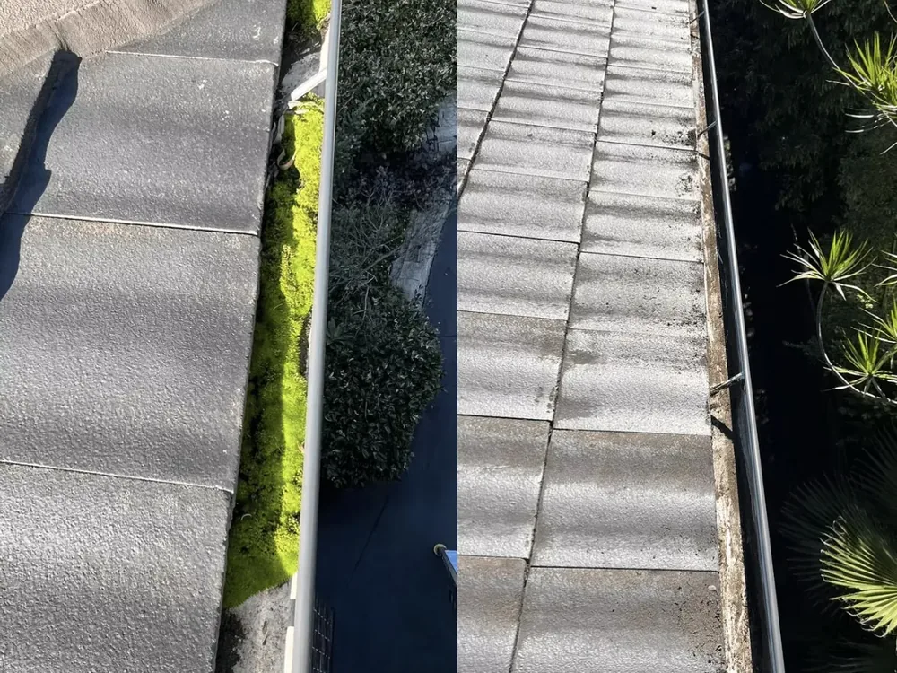
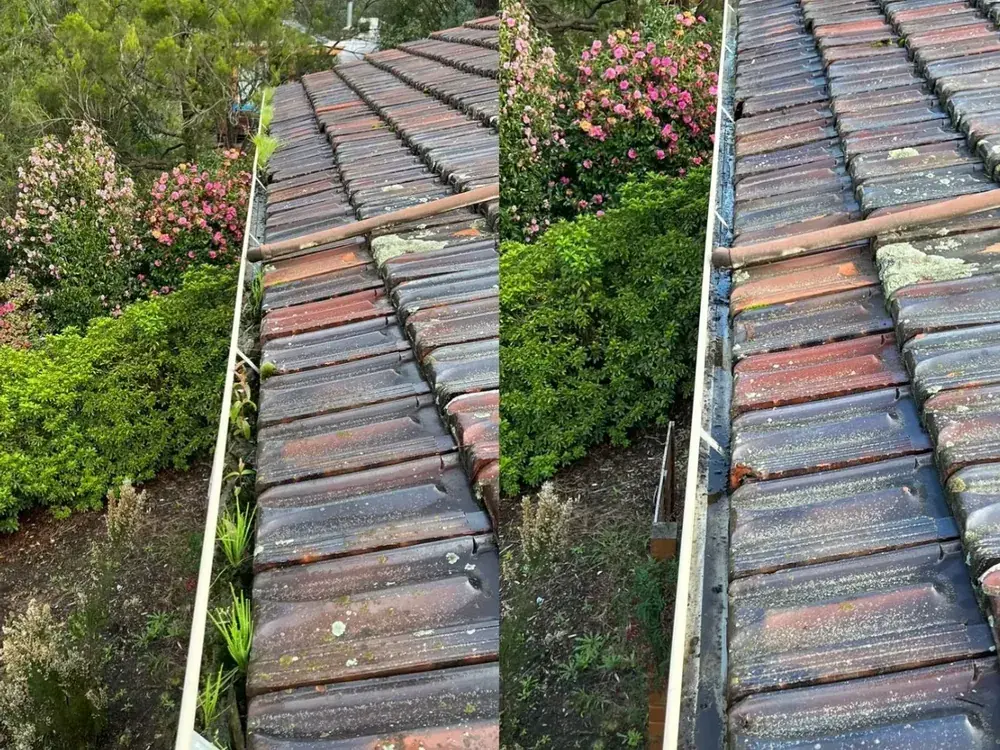

Gutter Cleaning Melbourne
Gutter Cleaning Melbourne — Safe, Thorough, Fully Insured
Blocked gutters lead to leaks, overflow and costly water damage. We clear them safely and completely so your home stays protected all year round.
When gutters clog with leaves, twigs and sludge, rainwater has nowhere to go. It overflows down your walls, pools around your foundations and can seep into ceilings and eaves — turning a small maintenance job into an expensive repair. Regular gutter cleaning is one of the cheapest and smartest ways to protect your home.
Stan The Man Cleaning provides safe, thorough gutter cleaning for homes and businesses across Melbourne's Eastern Suburbs. We're fully insured and use proper height-safety equipment, so you never have to risk climbing a ladder yourself. From single-storey homes to tricky double-storey rooflines, we get the job done properly.
What's included
- Removal of leaves, debris and built-up sludge from gutters
- Downpipes checked and flushed to ensure free flow
- Debris bagged and removed — we leave your property tidy
- Visual check for obvious damage, sagging or blockages
- Safe access using proper height-safety equipment
- Optional combine with a roof soft wash for a full refresh
Why regular gutter cleaning matters
In Melbourne's Eastern Suburbs, leafy streets and gum trees mean gutters fill faster than you'd think — especially heading into winter storms and the bushfire season. Clean gutters protect your roof, walls and foundations, reduce the risk of pests nesting in debris, and help your home shed water the way it was designed to. We recommend a clean at least once or twice a year, and more often if you're surrounded by trees.
Servicing your local area
We regularly work in Donvale, Doncaster, Doncaster East, Templestowe, Warrandyte, Park Orchards, Ringwood, Mitcham, Nunawading, Blackburn, Box Hill, Balwyn, Bulleen and Eltham. If you're anywhere in Melbourne's Eastern Suburbs, we'd love to help.
Real results
See the difference
Drag the slider to see a blocked gutter cleared and flushed on a recent Eastern Suburbs job.
Our process
How we clean your gutters
Safe access & assess
We set up proper height-safety gear and inspect your gutters, downpipes and roofline before we start.
Clear & flush
We remove leaves, twigs and sludge by hand, then flush the downpipes to make sure water flows freely.
Bag, check & tidy
All debris is bagged and removed, we check for obvious damage, and leave your property spotless.
Our work
Recent gutter cleaning jobs



FAQs
Gutter cleaning questions
Related services
Complete your exterior clean
Protect your home from water damage
Book a safe, thorough gutter clean today with a free, no-obligation quote.